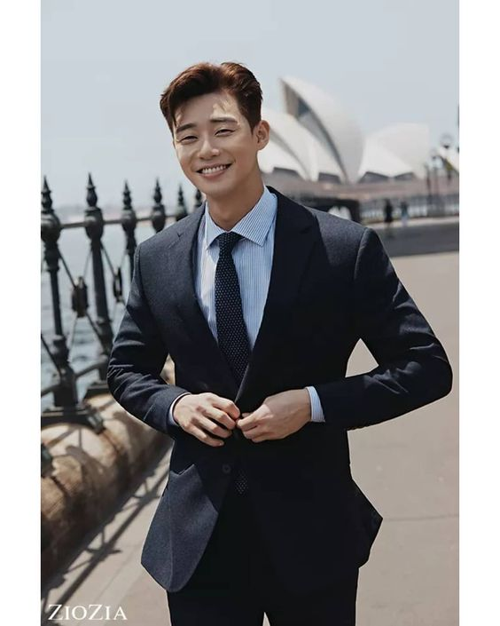

|
การแต่งชุดสูท ไม่จำเป็นต้องสวมใส่ไปเฉพาะในงานสำคัญ แต่สามารถสวมใส่ได้ทุกโอกาส และยังสามารถ มิกซ์แอนด์แมทช์ กับสูทให้เข้ากับเสื้อผ้าที่สวมใส่ในปัจจุบันไห้ออกมาดูดีและเท่ได้ และยังดูน่านับถืออีกด้วย **************************** คุณผู้ชายวัยทำงานควรเลือกชุดสูทที่เสื้อและกางเกงเป็น สีโทนเดียวกันเช่น ดำ กรม เทา ครีม หรือสีโทนเข้ม เสื้อข้างในควรเป็นสีอ่อนกส่าสูทด้านนอก จะทำให้ได้ลุคที่เท่และหรูขึ้น เครื่องประดับควรเลือกใส่เป็นนาฬิกาสีสุภาพ ชุดแบบกึ่งทางการ สังเกตได้ง่ายๆ จะไม่รวบตึง คือ ไม่มีเนคไทหรือไม่ผูกโบว์บริเวณคอ จะให้ความรู้สึกสบายๆ แต่ชุดสูทยังคงเต็มเหมือนเดิม การใส่สูทแบบกึ่งทางการไม่จำเป็นต้องติดกระดุม ใส่แบบปล่อยสบายๆ ก็ได้ เสื้อด้านในยังคงเป็นเสื้อเชิ้ตหรืออาจจะเป็นเสื้อโปโลก็ได้ ไม่จำเป็นต้องติดกระดุมคอ หรือใครอยากติดเพื่อเพิ่มความเนี๊ยบก็ไม่ว่ากัน เป็นการแต่งตัวเหมือนที่เราใส่กันทุกวันนี่แหละ แค่เพิ่มสูทเข้ามาอีกตัวเท่านั้น เสื้อผ้าที่เลือกมาใส่จะง่ายๆ สบายๆ แล้วก็เลือกสูทสไตล์ที่ใช่มาใส่เพิ่มความโก้หรูอีกนิดเพียงเท่านี้ก็ทำให้คุณดูดีขึ้นอีกมากทีเดียว เสื้อเชิ้ตดีไซน์สุดเนี๊ยบ มาในโทนสีเรียบๆ ใส่ได้ง่ายเข้ากับทุกลุคไม่ว่าจะเป็น Casual or Weekdays Look ทรงเข้ารูปพอดีตัว ใส่สบายทุกโอกาสแลดูหล่อสมาส ครีเอทลุคที่แสนดูดีให้กับวันทำงานของคุณหนุ่ม ๆ ด้วยกางเกงขายาว ที่พร้อมให้คุณจับมิกซ์แอนด์แมทช์เข้ากับเสื้อเชิ้ตตัวโปรดสักตัว เพื่อคอมพลีทลุคที่ดูดีได้ง่ายๆ โดยไม่ต้องพยายาม  เลือกชุดสูทที่เสื้อสูทและกางเกงเป็นสีเดียวกัน ส่วนใหญ่จะเป็นสีพื้นๆ ดำ กรม เทา ครีม หรือสีในโทนเข้ม ส่วนไซส์ควรเลือกที่พอดีตัว ไม่เล็กหรือหลวมจนเกินไป เสื้อข้างในควรเป็นเสื้อเชิ้ต ผูกเนคไทหรือผูกโบว์บริเวณคอเสื้อ ชุดแบบกึ่งทางการ สังเกตได้ง่ายๆ จะไม่รวบตึง คือ ไม่มีเนคไทหรือไม่ผูกโบว์บริเวณคอ จะให้ความรู้สึกสบายๆ แต่ชุดสูทยังคงเต็มเหมือนเดิมเติมเต็มลุคของคุณด้วยแว่นตากันแดดดีไซน์เก๋
|
|
|---|